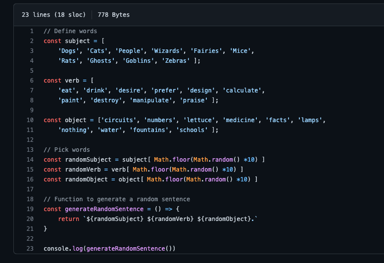
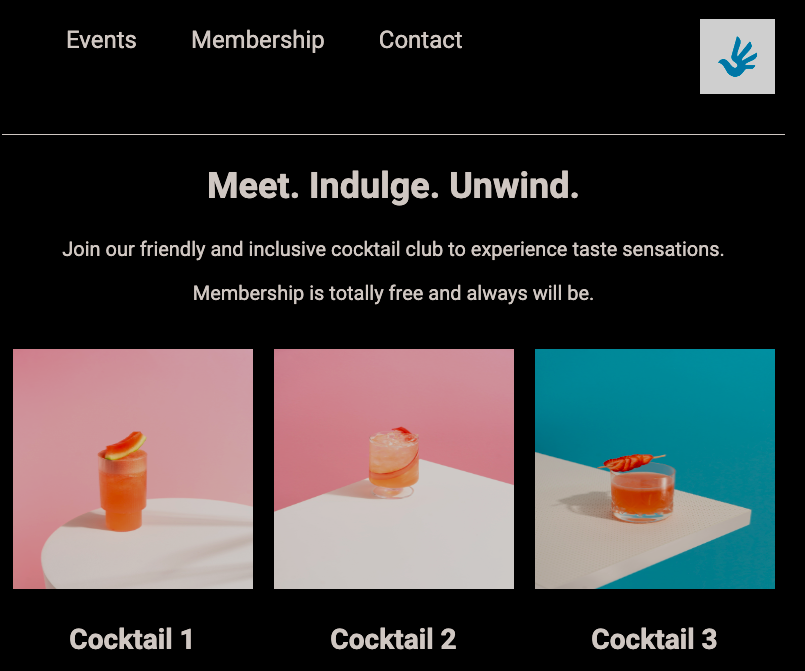
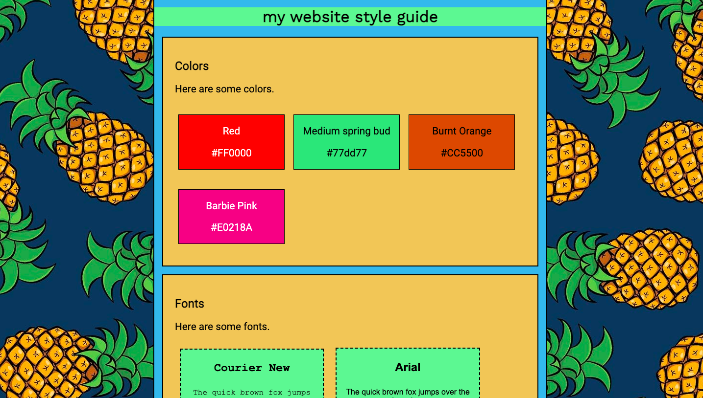

About Me
Hello! My name is Harry, and I work in research and communications for an international affairs organisation in London, England. When I am not at work, I am learning computer programming.
Before starting my current role in January 2019, I worked as a barista in my hometown in Hertfordshire, England; and while at university, I did internships in operations and human resources in Paris, France, and Tokyo, Japan.
In my spare time, I enjoy swimming in ponds and lakes, as well as in the sea when I can get there, and reading fiction. Some of my favourite authors are Ishiguro, Yanagihara, Dostoevsky, and Dickens.
Motivational Message
Click on the button below for a motivational message!
Projects - click the arrows for more details
Mixed Messages (JavaScript)

A JavaScript program that generates quasi-random sentences from values contained in different arrays
Cocktail Club (HTML and CSS)

A webpage built with a focus on using Responsive Design, made using HTML and CSS
My Website Style Guide (HTML and CSS)

One of the earliest projects I did when learning to program- a webpage made using HTML and CSS, detailing some CSS style guidelines
Skills